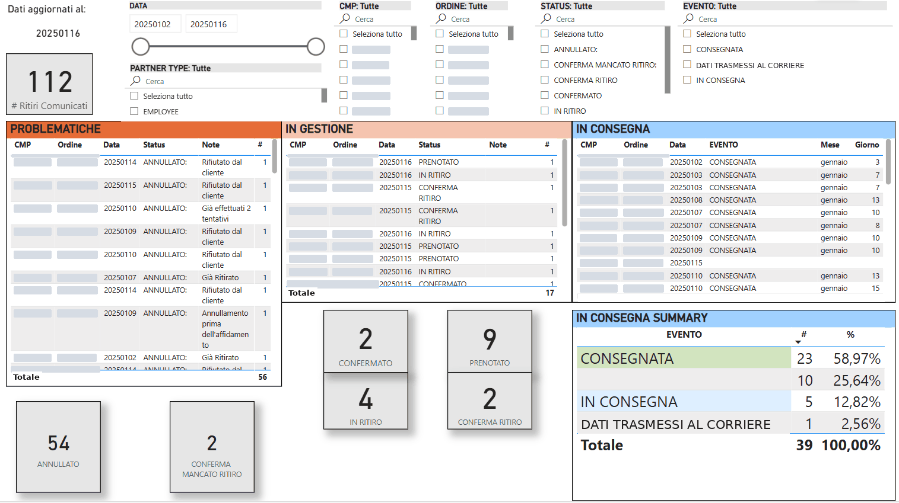

Il problema
I resi sono il percorso inverso di una consegna: la merce torna dal cliente al magazzino e il corriere comunica ogni passaggio. Senza una vista unica era difficile capire quali ritiri erano stati annullati e perché, quali erano ancora da organizzare e quali erano già in viaggio.
I problemi emergevano tardi, spesso solo quando un cliente chiedeva che fine avesse fatto il suo reso.
La soluzione
I dati dei corrieri sono organizzati in tre blocchi operativi, ognuno con la propria tabella e i conteggi per stato:
ProblematicheRitiri annullati o non riusciti, con il motivo riportato
In gestioneResi prenotati, in ritiro o in attesa di conferma
In consegnaResi in viaggio verso il magazzino e il loro ultimo evento
Cosa comprende la soluzione
Card per statoNumero di resi per ogni stato, a colpo d'occhio
Note sui motiviPerché un ritiro è stato annullato o non è riuscito
Riepilogo consegneQuota di resi per ultimo evento del corriere
FiltriPer data, tipologia cliente, ordine, stato ed evento
Aggiornamento datiUltimo refresh e orario di download sempre visibili
Tabelle di dettaglioDai totali fino al singolo reso

Risultati
- Ogni reso visibile dalla richiesta di ritiro all'arrivo in magazzino
- Ritiri annullati o falliti segnalati con il relativo motivo
- Resi in corso monitorati per stato invece che via email
- Una base chiara per i solleciti a corrieri e clienti
Stack
Power BI
DAX
Data Modeling
Nomi dei clienti e dati riservati sono stati omessi. Le immagini in questa pagina non contengono dati di clienti.